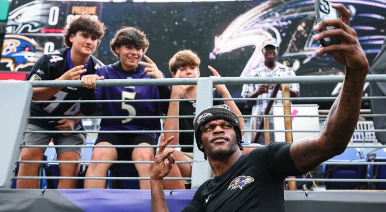

How leagues are using social media, streaming, gaming, and generative AI to win over younger fans

According to a Morning Consult poll, 20% of Gen-Z adults identify as avid sports fans, compared to 33% of Millennials and 27% of Generation X. One-third of the Gen-Z respondents said they do not follow sports at all. Even among those who are fans, the touchpoints for teams and leagues are changing constantly.
In the Jan. 28 poll, social media (53%) and streaming services (38%) were the top choices for the Gen-Z respondents when it comes to where they go the most for sports content.
Media consumption for Gen Z and Gen Alpha "is unprecedented," said Beal. The challenge is finding those eyes, and staying in front of them. Especially when it comes to casual sports fans who are perhaps more interested in the latest celebrity post than highlights from games.
"For our growth audiences, we partner with influencers in relevant adjacent spaces," she said, "whether it's food, fashion, other culturally relevant sort of spaces to reach that casual perspective fan to bring them into the baseball ecosystem through the side door and feed them that adjacent baseball content through the lens of players or influencers to then ultimately have them convert to be that core fan."
Partnerships play a role. The International Olympic Committee announced a collaboration with Roblox in 2024 that created Olympic World on the popular online gaming platform. Los Angeles Lakers star LeBron James and Los Angeles Dodgers slugger Shohei Ohtani are part of Fortnite, an online game. Major League Baseball also has a partnership with ABCmouse for baseball-themed learning activities for kids.
"We're trying to fish where the fish are, quite honestly," Dowler said.
The NBA has been experimenting with using generative AI to create more specialized content — think animation for a younger age group, something that wasn't practical before because of the cost — but it's pursuing a particular look and feel on social media.